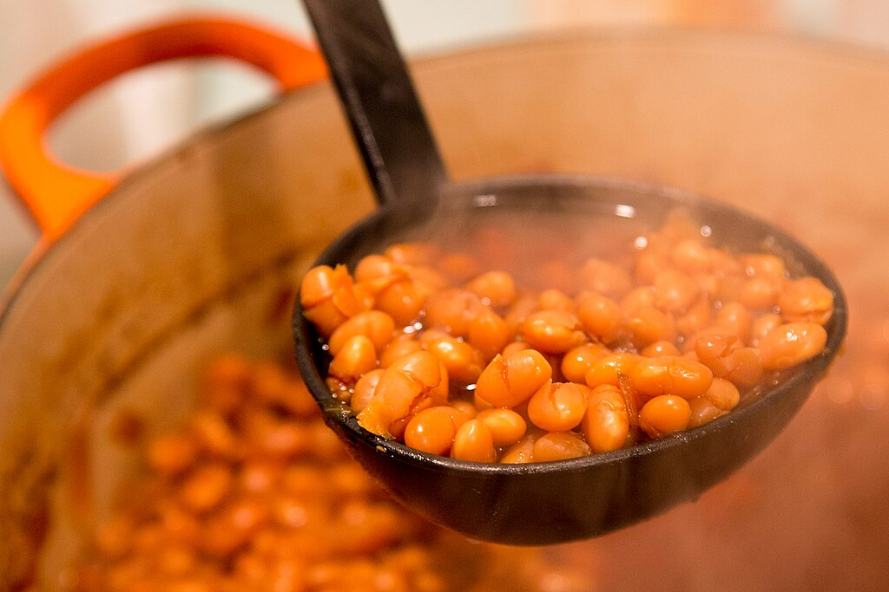

Baked Beans

These baked beans from scratch are made by combining navy beans, molasses, and maple syrup to make this classic dish at home.
Sink your spoon into a bowl of these irresistibly rich and smoky baked beans, lovingly made from scratch. Plump navy beans are simmered low and slow in a luscious blend of molasses and pure maple syrup, infusing every bite with deep, caramelized sweetness and a hint of earthiness. Perfectly balanced and soul-warming, this timeless dish is a showstopper at any cookout or a cozy comfort on its own. Homemade never tasted so good.
Ingredients
- 1 cup navy beans, soaked overnight and drained
- 4 cups water
- 1/4 cup ketchup
- 1/4 cup maple syrup
- 2 tablespoons brown sugar
- 2 tablespoons molasses
- 1 teaspoon Worcestershire sauce
- 1/2 teaspoon salt
- 1/8 teaspoon ground black pepper
- 1/8 teaspoon chili powder
- 1 small onion, chopped
Steps
- Gather the ingredients.
- Place beans in a large saucepan with 4 cups of water. Bring to a boil over high heat, then reduce heat to medium-low, cover, and simmer 1 hour.
- Preheat the oven to 375 degrees F (190 degrees C). Stir ketchup, maple syrup, brown sugar, molasses, Worcestershire sauce, salt, pepper, and chili powder together in a small bowl; set aside.
- Once beans have simmered for 1 hour, drain, and reserve cooking liquid. Pour beans into a 1 1/2-quart casserole dish; stir in chopped onion and molasses mixture. Stir in enough reserved cooking liquid so sauce covers beans by 1/4 inch.
- Cover and bake in the preheated oven for 10 minutes; reduce heat to 200 degrees F (95 degrees C) and cook 6 hours longer, stirring beans after they have cooked for 3 hours. Once beans are tender and sauce has reduced and is sticky, remove from the oven, stir, recover, and allow to stand 15 minutes before serving.
Home